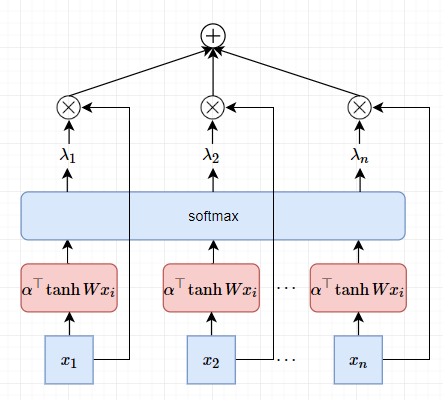
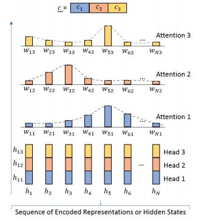

漫谈注意力机制（四）：注意力机制的退化之AttentionPooling
注意力机制也能退化？退化后的结果是什么？AttentionPooling？！
理解查询向量
我们都知道注意力机制是对聚焦式注意力的建模，需要聚焦的内容由查询向量$\boldsymbol{q}$描绘，
一个直观的例子，视野中由很多的水果，包括苹果、香蕉、雪梨等，聚焦式注意力任务要找的目标是苹果，那么构造查询量应该包括苹果的信息或特征，如苹果的颜色、形状等等，以便在评分函数下与视野中的目标获得更高的权重。当然这只是一个不太严格的直观例子，总之查询向量$\boldsymbol{q}$要体现聚焦式注意力需要关注的内容。
但是，在很多情况下，我们无法确定查询向量$\boldsymbol{q}$，或者在具体的问题中，无法抽象地对查询向量$\boldsymbol{q}$建模，这种情况如何处理？答案是退化成显著性注意力，这种形式的注意力机制可以作为显著性注意力的替代方案。
退化成显著性注意力
在深度学习中，注意力机制主要是用来做信息筛选，从输入信息中选取和任务相关的信息。 这一点正是其发自人类的聚焦时注意力，有趣的是，我们通过某种方式，让聚焦时注意力退化为显著性注意力。
如果我们并不知道查询向量 $\boldsymbol{q}$ ，例如我们把注意力机制运用到分类场景下，查询向量是什么？没有吧。不过我们稍加处理即可使用上述方法。方法就是把评分函数，或者说注意力分布参数化，让模型自动学习。只要没有查询向量$\boldsymbol{q}$，注意力机制均可以认为是显著性注意力。
首先我们来看看，直接在原来注意力机制要做的事情分三步中直接把查询向量$\boldsymbol{q}$去掉。假设有一向量序列 $\boldsymbol{X} = [\boldsymbol{x}_{1}, \dots, \boldsymbol{x}_{n}] \in \mathbb{R}^{n \times d}$，如一句子通过 Embedding 后的输出，其维度为(timesteps, features)。
第一步，假设我们有评分函数 $s$ 用于计算每个 $\boldsymbol{x}_{i}$ 的相关性，那么有，
评分函数 $s$ 可以是一个简单的Dense网络或者是一个不带参数的数学函数。
第二步，使用softmax对分值进行归一化，
第三步，就是加权平均，
这三步构成的过程和普通注意力机制没有差异，只不过去掉了查询向量$\boldsymbol{q}$。
由于没有了查询向量$\boldsymbol{q}$，以上注意力机制本质上是显著性注意力，另外还需要解决评分函数 $s$ 的具体形式。这里有一种比较常用的形式，
$\boldsymbol{W}, \boldsymbol{w}$都是可学习的参数。在softmax归一化后有，
因此有，
这可以看做是基于Attention机制的Pooling操作，我称这种注意力机制为AttentionPooling，如果用在多维时间序列上，称为AttentionPooling1D。该Pooling的直观视图，

但是，这个Pooling模型有个 BUG，如果把 $\boldsymbol{X} = \left [\boldsymbol{x}_{1},\boldsymbol{x}_{2},\cdots,\boldsymbol{x}_{n} \right]$ 序列打乱，在扔到这个神经网络中，得到的结果还是一样的。这意味着这个模型无法处理序列的位置问题。为此，可以在Embedding上叠加位置Embedding，于是每个词向量为，
$\boldsymbol{p}_{i}$为位置$i$的位置向量。既然万物皆Embedding，那么位置也能Embedding，一种最直接的做法就是对位置编号$i$也使用Embedding，即
这个AttentionPooling操作也可以多头化，即独立地重复多次Pooling并拼接，示意图如下，

方法来自论文DiSAN: Directional Self-Attention Network for RNN/CNN-Free Language Understanding。
那么为什么说这是退化呢？聚焦式注意力需要调度人的意志力，是一个复杂的心智过程，具有主动性；而显著性注意力，是被动地关注信息。从认知上来讲，这是一种退化。
LSTM中的显著性注意力
以上我们分析得到，Attention在没有query的情况下是退化成显著性，这可以看做是显著性注意力建模的一种方式。另外一种对显著性注意力建模的方式是门机制。首先看看LSTM模型的表达式，
看起来十分吓人，这里的关键其实是门机制的引入。上式红色部分表示要保留的历史信息，历史信息为内部状态$c_{t-1}$，保留的比例有遗忘门$f_t \in [0, 1]$决定。而遗忘门可以理解成是输入$x_t$在查询向量为$q=h_{t-1}$下的加性注意力。而$h_{t} = o_{t} \circ \tanh \left( c_{t} \right)$，说明这里的加性注意力的查询向量是非外部构造的，因此对遗忘门的建模就退化成显著性注意力。
这里给出一个从显著性注意力机制理解LSTM的思路。
一个笑话
[一个笑话，本文的查询量被去掉了，因此没有总结~]
转载请包括本文地址：https://allenwind.github.io/blog/9480
更多文章请参考：https://allenwind.github.io/blog/archives/